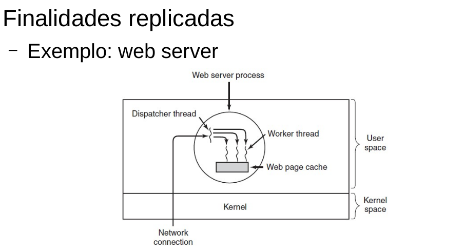

Sincronização - Semáforos
Conforme visto no laboratório anterior, os Locks são bastante simples de entender e implementar. Também é bastante fácil decidir quando você deve precisar deles. No entanto, se a situação for mais complexa, você pode precisar de uma primitiva de sincronização mais poderosa. Para aplicativos com recursos finitos, usar semáforos pode ser uma aposta melhor.
Os semáforos são basicamente contadores que diminuem quando um recurso está sendo consumido (e aumentam novamente quando o recurso é liberado). Você pode pensar em semáforos que representam seus recursos como disponíveis ou indisponíveis. Python simplifica toda a nomenclatura e usa os mesmos nomes de função/método como nos Locks: acquire e release. Os semáforos são mais flexíveis do que os Locks porque você pode ter várias threads, cada uma usando uma das instâncias do recurso finito.
Para exercitar o uso de semáforos, vamos ver o exemplo de uma aplicação cliente-servidor, simulando uma aplicação multithreading de um web-server, como o visto em aula e apresentado na imagem a seguir.

Note que a aplicação funciona como um dispatcher, ou seja, um lançador de threads para cada nova conexão recebida. A thread lançada então executa um trecho de código comum entre elas. No exemplo, o nosso servidor web simplificado, pode ser implementado a partir do código a seguir:
#lab5-server.py
import socket
import threading
import time
def trataCliente(conn, addr):
while True:
data = conn.recv(100)
print(time.ctime(),addr,'enviou',data)
if not data:
conn.close()
break
if __name__=="__main__":
s = socket.socket(socket.AF_INET, socket.SOCK_STREAM)
try:
s.bind(('', 9999))
except:
print('ERRO no bind')
sys.exit()
s.listen()
print('Aguardando conexoes na porta ', 9999)
while True:
conn, addr = s.accept()
print('Recebi uma conexao do cliente ', addr)
t = threading.Thread( target=trataCliente, args=(conn,addr,))
t.start()
Você deve rodar esse código em um terminal e simular as conexões dos usuários através do código a seguir, executando cada cliente em um outro terminal.
#lab5-client.py
import socket
import time
HOST = '127.0.0.1'
PORT = 9999
with socket.socket(socket.AF_INET, socket.SOCK_STREAM) as s:
s.connect((HOST, PORT))
while True:
s.sendall(b'Hello, world')
time.sleep(1)
Note que para cada nova conexão, o servidor irá instanciar uma thread que irá imprimir as mensagens enviadas pelos clientes, que por sua vez, enviam uma mensagem de “Hello, world” a cada segundo.
Exercício:
O Semáforo, como visto anteriormente, é um objeto criado para controlar o número de threads para um recurso, de forma que somente um número limitado de threads possa acessar um recurso simultaneamente.
Python implementa semáforos através da importação e declaração a seguir (declaração que deve ser feita no programa principal, antes da chamada das threads).
from threading import BoundedSemaphore
semaphore = threading.BoundedSemaphore(2)
Quando uma thread for usar uma variável compartilhada, ou acessar um região crítica, deve-se incrementar o contador interno do semáforo:
# incrementa o contador se bem sucedido
semaphore.acquire(False)
Após usar a variável compartilhada ou deixar a região crítica deve-se decrementar o contador interno do semáforo:
# decrementa o contador
semaphore.release()
Posto isso, o objetivo do exercício é fazer com que o servidor aceite no máximo duas conexões simultâneas usando Semáforo.
Na versão do servidor limitado a no máximo duas conexões simultâneas, caso uma terceira tentativa de conexão seja realizada, o servidor deve imprimir a mensagem: “Conexões excedidas, tente depois…“.
Acesse o seguinte link, siga as instruções e responda às perguntas lá. O formulário estará disponível durante o horário de aula somente.